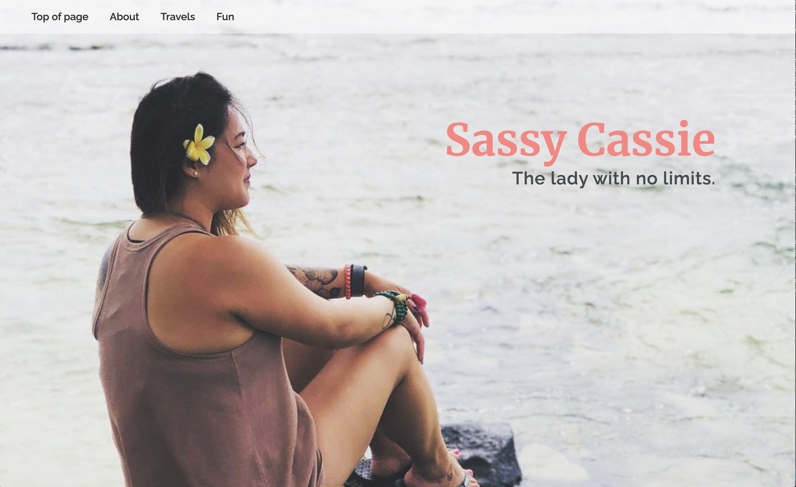

This my Bio Site.
Description: This was a part of my final in my WEB 220 class. This final was interviewing someone and creating a personal website for them. I interviewed my sister Cassie. She has travelled all over the world and had many photos to share. I decided to create a parallex layout to dispay her images, while throwing in some Javascript to give it some cool features.

×

Repo: https://github.com/devanwong/bioSite
Website: https://devanwong.github.io/bioSite/
Prototype: Prototype & Ideas